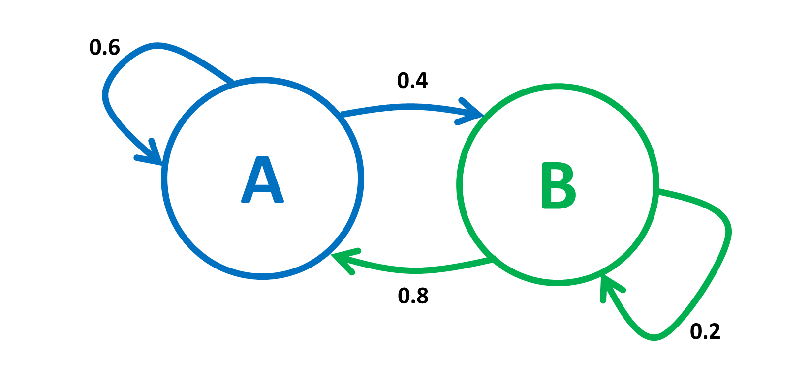

Markov Chains¶
Markov chains are models of random motion in a finite set, capturing a vast array of systems encountered in applications in a simple manner that can be described using elementary matrix algebra.
An example is modeling a system of webpages, and the likelihood of a user visiting certain pages of the site. On average, how many steps might it take before a user visits a certain page.

Above is an example of a simple Markov chain describing a random motion in the set \(\{A, B\}\). The position at time \(n=0, 1, 2, \cdots\) is \(X_n \in \{A, B\}\). We call \(X_n\) the state of the Markov chain at time \(n\).
Let \(A=0, B=1\). The above figure can be described by the following set of equations:
Figure 1 summarizes the rules above, which specify the transition probabilities. The Markov chain is amnesic: at step \(n\), it forgets what it did before getting to the current state and its future steps only depend on that current state.
We define the transition probability matrix \(P\) by \(P(0,0)= 0.6, P(0,1)=0.4, P(1,0)=0.8, P(1,1)=0.2\). That is,
Hence, \(Pr[X_{n+1}=j|, X_n=i, X_{n-1}, \cdots, X_0] = P(i,j) \text{ for } n\geq 0 \text{ and } i, j \in {0,1}\).
Finite Markov Chains¶
One defines a general finite Markov chain as follows. The state space is \(\mathscr{K} = \{1, 2, \cdots, K\}\) for some finite \(K\). The transition probabiility matrix \(P\) is a \(K\times K\) matrix such that:
and
The initial distribution is a vector \(\pi_0=\{\pi_0(i), i\in\mathscr{K}\) where \(\pi_0(i)\geq 0,\forall i\in\mathscr{K}\) and \(\sum_{i\in\mathscr{K}}\pi_0(i)=1\).
One defines the random sequence \(\{X_n,n=0,1,2,\cdots\}\) by
Note that
Consequently,
Where’s the last expression is component \(i_n\) of the product of the row vector \(\pi_0\) times the \(n\)-th power of the matrix \(P\).
Thus, if we designate by \(\pi_n\) the distribution of \(X_n\), so that \(Pr[X_n=i]= \pi_n(i)\), then the last derivation proves the following result:
Theorem
One has
In particular, if \(\pi_0(i)=1\) for some \(i\), then \(\pi_n(j)=P^n(i,j)=Pr[X_n=j| X_0=i]\).
Balance Equations¶
A distribution \(\pi\) is invariant for the transition probability matrix \(P\) if it satisfies the following balance equations:
Theorem
if and only if \(\pi_0\) is invariant.
Proof
If \(\pi_n=\pi_0\) for all \(n\geq 0\), then \(\pi_0=\pi_1=\pi_0P\), so that \(\pi_0\) satisfies the definition of invariance.
If \(\pi_0P=\pi_0\), then \(\pi_1=\pi_0P=\pi_0\). Also, if \(\pi_n=\pi_0\), then \(\pi_ {n+1}=\pi_nP=\pi_0P=\pi_0\).
Time¶
A Markov chain is irreducible if it can go from every state \(i\) to every other state \(j\), possibly in multiple steps. It is only irreducible if and only if its state transition diagram is a directed graph with a single connected component.
Theorem
Consider a finite irreducible Markov chain with state space \(\mathscr{K}\) and transition probability matrix \(P\). Then, for any initial distribution \(\pi_0\),
In the above equation, \(\pi=\{\pi(i),i\in \mathscr{K}\)} is an invariant distribution. Consequently, the invariant distributon exists and is unique.
It is not always the case that \(Pr[X_n=i]\) converges to some value as \(n\) increases. A simple example is our two state Markov chain, where \(Pr[X_n=0]\) is oscillating between 0 and 1; such a Markov chain is said to be periodic.
Theorem
Consider an irreducible Markov chain on \(\mathscr{K}\) with transition probability matrix \(P\). Define
\(d(i)\) has the same value for all \(i \in\mathscr{K}\). If that value is 1, the Markov chain is said to be aperiodic. Otherwise, it is said to be periodic with period \(d\). If it is aperiodic, then \(Pr[X_n=i]\rightarrow\pi(i),\forall i\in \mathscr{K}\), as \(n\rightarrow\infty\), where \(\pi\) is the unique invariant distribution.